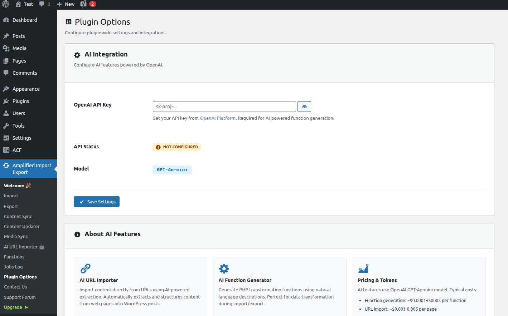

🛠️ Plugin Options
Configure global plugin settings and API keys.
Navigate to Amplified Import Export → Options to access the plugin settings panel.

AI Settings
Settings for the AI-powered features: AI URL Importer and AI Function Generator.
| Option | Description | Required |
|---|---|---|
| OpenAI API Key |
Your OpenAI secret key (starts with sk-). Required for the AI URL Importer and the
AI Function Generator. Get a key at platform.openai.com.
|
Yes (for AI features) |
⚠️ Keep Your API Key Secret
Your OpenAI API key is stored securely in the WordPress database and is never exposed in the front end.
Do not share it publicly. If compromised, revoke it immediately from the OpenAI dashboard.
Pricing & Tokens
AI features use the OpenAI GPT-4o-mini model — one of the most cost-effective models available. You are billed directly by OpenAI based on the number of tokens consumed. Typical costs:
| Feature | Typical Cost |
|---|---|
| Function Generation | ~$0.0001 – $0.0003 per function |
| URL Import | ~$0.001 – $0.005 per page (depends on page length) |
You pay OpenAI directly — the plugin does not add any markup. Monitor your usage and set spending limits in the OpenAI dashboard:
Saving Settings
Click Save Settings after making any changes. A success notice will confirm that your settings have been stored.
ℹ️ Settings Are Per-Site
On WordPress Multisite installations, settings are stored per-site and are not shared across the network.
Configure options separately on each sub-site where the plugin is active.